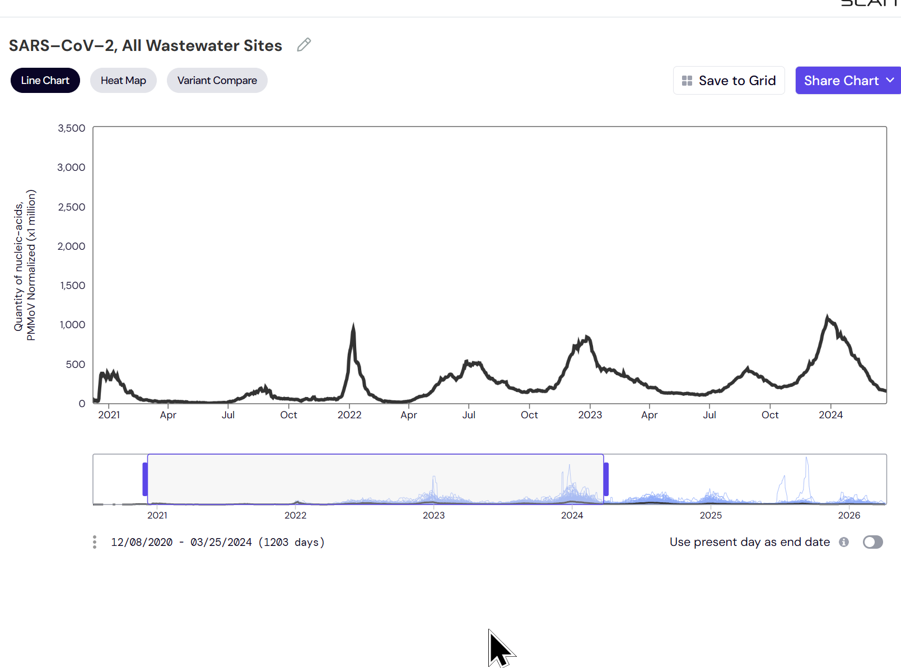
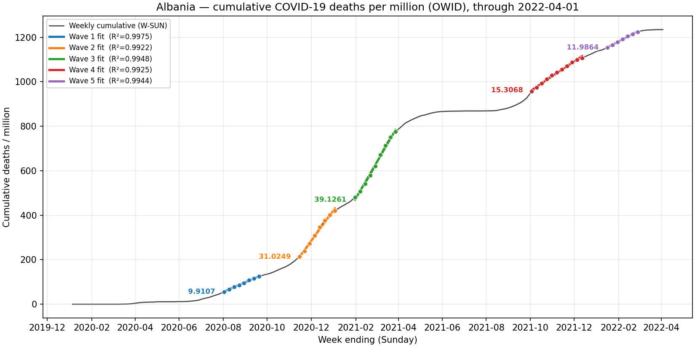
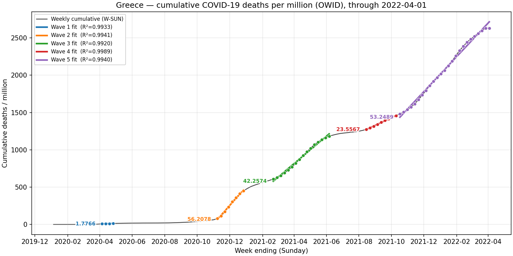
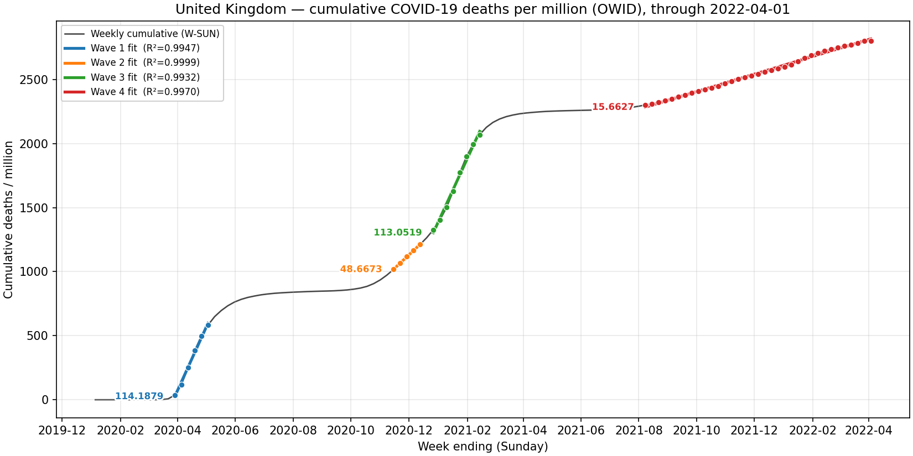
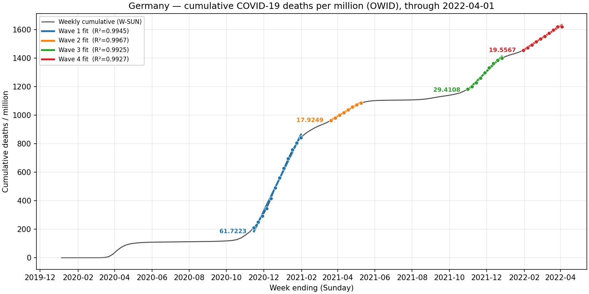
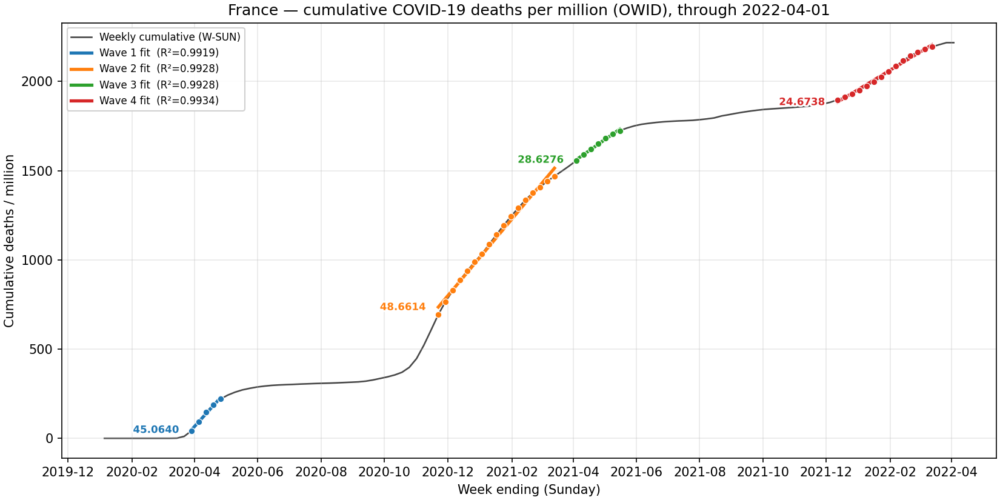
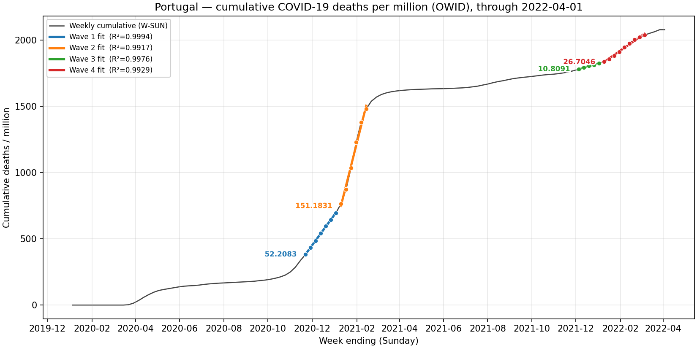
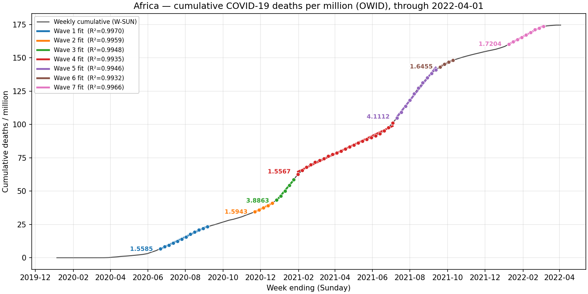
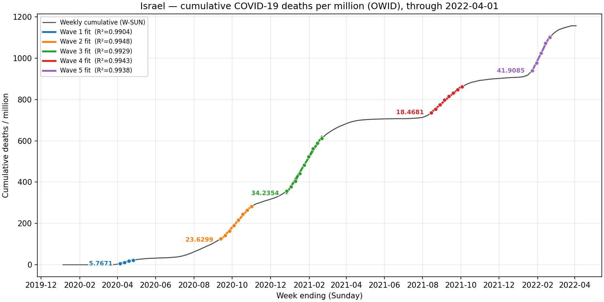
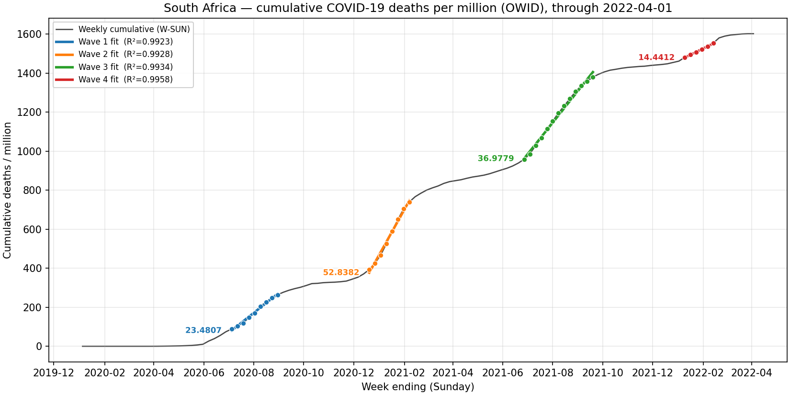

Evidence Dumping Ground
This file is a working collection point for evidence, claims,
figures, charts, screenshots, paper links, notes, and open questions
relevant to the debate:
In the United States, did the mRNA COVID vaccine likely net
save lives or cost lives through the end of 2022?
The immediate debate task is to assemble the strongest possible
evidence base for the claim that the mRNA COVID vaccines had
negative net benefit. However, the working meta-view
behind this file is more cautious:
- the true answer may be too confounded to know cleanly from
observational evidence alone
- there may be no single killer argument
- the strongest final case will likely come from accumulating multiple
lines of evidence, each with clearly stated strengths and
weaknesses
The goal at this stage is not to force premature
conclusions. Instead, this file is meant to capture potentially useful
material as we find it, with enough context to revisit, verify,
organize, and evaluate it later.
This file should be suitable as a handoff document for a new
Codex/chat instance. A fresh instance should be able to read this file
and understand:
- the debate question
- the assigned stance for argument-building
- the actual methodological caution behind the project
- the kinds of evidence we want to collect
- the main caveats already identified
Suggested use:
- append items as we go
- include source details whenever possible
- include charts, screenshots, local image paths, and paper URLs
- distinguish observation from interpretation
- note whether a claim is direct evidence, indirect evidence, or
framing
- keep open questions visible
- treat weak or incomplete items as provisional until checked
Current Project Framing
Debate Question
In the US, did the mRNA COVID vaccine likely net save lives
or cost lives through the end of 2022?
Assigned Debate Role
Build the strongest evidence-based case that the mRNA COVID vaccines
had negative net benefit through the end of 2022.
Actual Methodological View
The working view behind the scenes is more restrained:
- the overall truth may be too confounded to identify cleanly
- the honest answer may be closer to "uncertain" than to either
extreme
- because of that, the debate case should rely on assembling evidence
rather than pretending there is one definitive proof
Practical Objective
Use this file as a dumping ground for:
- empirical facts
- charts and screenshots
- URLs to papers, articles, datasets, and official reports
- notes on how each item might support or weaken the
negative-net-benefit case
- counterpoints and limitations that should not be forgotten
The final debate document can later be created from this markdown
after the evidence base is richer and better organized.
What We Already
Learned From The Czech CFR Work
The repo contains substantial prior work under test/CFR focused on Czech COVID mortality and
vaccine-benefit interpretation under heavy confounding.
Important summary files:
Key takeaways from that work:
- simple vaccinated-versus-unvaccinated mortality comparisons are
heavily confounded by healthy-vaccinee effects and cohort
differences
- ecological old-versus-young designs are more informative, but still
not free of residual confounding
- the data did not show a convincing vaccine-harm
signal
- the data also did not prove a strong positive death
benefit
- the conservative interpretation was that
0 remained
compatible with the data, negative net effect was not the best-supported
reading, and modest positive effect was somewhat more plausible than
negative effect
This matters for the US debate because it reinforces a general
principle:
- strong claims in either direction should be treated carefully
- the argument is likely to be won or lost on the totality of
evidence, not on one fragile comparison
Useful Evidence
Categories To Collect
1. Population-Level
Mortality Patterns
Look for:
- all-cause mortality patterns before and after rollout
- age-specific COVID death trends
- wave-to-wave comparisons at high uptake
- signs that expected mortality reductions are absent, muted, or
offset
Why this matters:
- population-level patterns are less vulnerable to individual
healthy-vaccinee selection than simple vaccinated-versus-unvaccinated
cohort comparisons
2. Vaccine
Safety Signals Relevant To Mortality
Look for:
- myocarditis and cardiac death relevance
- serious adverse event estimates
- excess non-COVID mortality after rollout
- age- and sex-specific risk concentration
Why this matters:
- to make a negative-net-benefit case, evidence of prevented COVID
deaths is not enough; possible deaths caused must also be
documented
3. Benefit Claims That
May Be Overstated
Look for:
- claims based on surrogate endpoints
- model-based "deaths prevented" estimates with heavy assumptions
- cohort studies vulnerable to healthy-vaccinee effects
- outcome-definition problems such as "with COVID" versus "from
COVID"
Why this matters:
- weakening inflated benefit claims may be as important as proving
direct harm
4. US-Specific Evidence
Priority should go to:
- US mortality data
- CDC data/products
- US age-stratified outcomes
- US vaccine uptake by age and time
- US all-cause excess mortality
Why this matters:
- the debate question is explicitly about the United States through
the end of 2022
5. Strong Counterarguments
Collect these too:
- evidence favoring net saved lives
- strong age-stratified benefit studies
- evidence against broad harm interpretation
- critiques of ecological inference
Why this matters:
- the final case will be stronger if it acknowledges and responds to
the best opposing points
Current Local Data
Sources And Known Limits
Czech Data
Main local paths:
Notes:
- this is the main workspace used for the Czech cohort, wave,
falsification, and likelihood analyses
- it supports infection timing, COVID death timing, all-cause
mortality, cohort definitions, and age stratification
Japan Data
Main local paths:
Notes:
- the source files under data/japan2/source include age, death
week/date, dose dates, and dose manufacturer fields
- the Japan dataset does not include usable sex data
in the upstream source files
- the
Sex column in records.csv is present but empty
because the upstream source has no sex field
- this means sex-stratified Japan analysis is not currently possible
from this source set
Japan Analysis Status
Completed:
- age / birth-band stratification: yes
- dose-at-enrollment and calendar-anchor ACM:
yes
What was done:
- the original Japan workspace already contained KCOR / ACM / hazard
analyses rather than a Czech-style infection-CFR workflow
- an additional calendar-anchor 52-week ACM analysis was added to
compare dose groups within the same calendar enrollment date and birth
band
Relevant outputs:
Working takeaway:
- the Japan KCOR and calendar-anchor ACM outputs did
not show a robust broad ACM harm signal
- many all-age KCOR summaries leaned below
1, which is
more consistent with lower ACM in higher-dose groups than with broad
harm
- the simple post-dose timing plots were much weaker and more
composition-sensitive than the calendar-anchor analyses
- the cleaner anchored comparisons still looked more compatible with
healthy-vaccinee / frailty selection than with a strong vaccine ACM
causality signal
Practical conclusion:
- Japan is not currently one of the strongest datasets for making a
positive ACM-harm case
- it is still useful for methodological lessons, especially on how
misleading post-dose timing plots can be
Notes On Clare
Craig / "Spiked 10th March 2026.pdf"
The PDF Spiked.pdf was reviewed,
especially pages 300 to 400.
Working impression:
- the strongest contribution is not a proof of harm, but a skeptical
push against large claimed mortality benefit
- the most useful parts are the population-level arguments,
outcome-definition concerns, and critique of heavily model-dependent
"deaths prevented" claims
- the book does not appear to provide decisive
evidence that the vaccines clearly caused net excess death
Tentative takeaway:
- useful for shifting the burden against overconfident benefit
claims
- less useful as direct proof that the shots killed more than they
saved
Most Valuable Takeaways
For This Debate
These are the parts most worth resurfacing later if we want to
justify a skeptical or negative-net-benefit position without overstating
what the book proves.
- Large claimed mortality benefit should be doubted when highly
vaccinated populations do not show an obvious corresponding break in
death patterns.
- Population-level patterns are often more informative than heavily
confounded vaccinated-versus-unvaccinated cohort comparisons.
- Outcome-definition problems matter. If COVID death attribution is
noisy or inconsistent, then confident mortality-benefit claims become
weaker.
- Model-based "deaths prevented" estimates should not be treated as
direct evidence when they depend heavily on counterfactual
assumptions.
- Institutions may shift endpoints and definitions when promised
benefits fail to appear clearly in the real world; this is relevant when
evaluating claims built from infection, hospitalization, or surrogate
endpoints rather than hard mortality outcomes.
How Much This Moves The
Needle
The book is most useful for:
- arguing against overconfident claims that the mRNA shots clearly
saved large numbers of lives
- supporting the case that the true net mortality effect may have been
smaller and more uncertain than official narratives suggest
- reinforcing the need to focus on population-level evidence rather
than only on confounded cohort studies
The book is less useful for:
- proving that the vaccines clearly caused net excess death
- proving a strong direct harm signal by itself
- settling the US-specific question through the end of 2022 without
additional data
Practical Use In The Debate
Best use:
- as a source of skeptical framing
- as support for challenging inflated benefit claims
- as justification for demanding better evidence before accepting
large "lives saved" numbers
Less effective use:
- as the sole basis for claiming the vaccines killed more than they
saved
Important
Framing: Mortality Harm Need Not Look Acute
One recurring analytical mistake is to assume that if mRNA COVID
vaccines caused mortality harm, the signal would have to appear as a
sharp spike immediately after injection.
That assumption is too narrow.
Potential mortality pathways could include:
- acute mechanisms shortly after injection
- increased vulnerability after infection, including the possibility
of worse outcomes conditional on getting COVID
- elevated all-cause mortality over a medium time window such as
months to roughly a year
- delayed cardiovascular or thrombotic consequences, such as heart
damage, clotting, stroke, or related complications that do not present
as an immediate post-shot death spike
Why this matters:
- a purely acute-spike search may miss slower or distributed harm
patterns
- null findings in the first 1 to 2 weeks do not by themselves rule
out a broader mortality effect
- analyses should separate:
- acute post-dose risk
- medium-run all-cause mortality after dose
- mortality conditional on later infection
Practical implication for evidence gathering:
- do not rely only on "is there an immediate spike after
vaccination?"
- also examine:
- calendar-anchored ACM hazard by dose status
- event-study designs around rollout waves
- post-infection ACM conditional on vaccination status
- longer time-since-dose ACM patterns with careful adjustment for
selection and frailty
When adding items, try to use this structure:
Item Title
- Type: paper / chart / screenshot / dataset / note / claim /
rebuttal
- Relevance: direct / indirect / framing / counterpoint
- Supports: negative-net-benefit / positive-net-benefit /
ambiguous
- Source: URL or local file path
- Date:
- Summary:
- Why it matters:
- Caveats:
For local materials stored in this debate workspace, use relative
paths:
figures/ for images, screenshots, and chartsdocs/ for PDFs, Word files, and other supporting
documents
Example:

[Supporting PDF](docs/Spiked.pdf)
Evidence Items
US wastewater chart
from WastewaterSCAN
- Type: screenshot / chart
- Relevance: indirect / framing
- Supports: negative-net-benefit
- Source: WastewaterSCAN
URL
- Date: chart spans roughly
2020-12-07 to
2024-03-22
- Summary:
- This figure is a US wastewater chart from WastewaterSCAN.
- It appears to have been saved as a test image in the figures folder
and should not currently be used as the Israel cumulative-deaths example
discussed earlier.
- Until it is described more precisely, it should be treated as a
placeholder or separate evidence item rather than as support for the
prior Israel mortality-slope argument.
- Why it matters:
- Wastewater can be useful as a population-level infection-pressure
indicator.
- It may later help compare infection intensity against death,
hospitalization, or vaccination-era outcomes.
- That kind of comparison could matter when arguing that later
mortality patterns were driven by changing exposure pressure rather than
obvious vaccine benefit.
- Caveats:
- This is not the previously discussed Israel deaths-per-million
chart.
- Wastewater is an indirect proxy for transmission pressure, not a
mortality endpoint.
- On its own, it cannot establish whether vaccines saved or cost
lives.
- The exact interpretation depends on which marker, geography, and
aggregation are shown.
- Notes:
- Rename this file once we decide what the chart is meant to
show.
- Do not cite it as Israel mortality evidence in its current
state.
Embedded figure:

Stored file:
Israel
wastewater surge after heavy vaccination
- Type: PDF slide deck / chart
- Relevance: indirect / framing
- Supports: negative-net-benefit
- Source:
- Date:
- presentation date shown in the deck:
2022-10-05 to
2022-10-07
- slide
9 plots waves from roughly Dec 2020
through March 2022
- Summary:
- Slide
9 shows Israel wastewater SARS-CoV-2 normalized
viral load by region on a log scale.
- The plotted scale runs from about
1.0E+06 to
1.0E+10, so order-of-magnitude differences are visually
meaningful.
- The user’s interpretation is that later waves, especially
Delta/Omicron-era waves in a highly vaccinated country, appear
dramatically larger than earlier waves.
- Why it matters:
- Israel is a useful case because it vaccinated early and heavily and
appears to have had unusually serious wastewater tracking.
- If infection pressure became much larger in a highly vaccinated
population, that creates tension with strong claims that repeated mRNA
vaccination clearly reduced spread at population level.
- This is potentially useful as a "natural experiment" style framing
exhibit when arguing that real-world infection dynamics did not behave
as expected under a strong anti-infection narrative.
- Caveats:
- This is not US-specific evidence.
- Wastewater is a proxy for viral circulation, not a direct measure of
deaths, hospitalizations, or net mortality benefit.
- A rise in wastewater after rollout does not by itself prove vaccines
increased infection risk; variant immune escape, changed behavior, prior
immunity patterns, and other time-varying factors are alternative
explanations.
- The strongest defensible use of this item is to challenge strong
anti-infection claims, not to treat it as a standalone proof of negative
net mortality effect.
- Practical debate use:
- Strong use: "In a highly vaccinated country with serious wastewater
surveillance, later infection waves still became enormous, which
undermines strong claims that mass vaccination clearly suppressed
transmission."
- Weaker use: "This proves the vaccines increased infection." That
goes beyond what the slide alone can identify.
Cleveland
Clinic study: more prior vaccine doses associated with higher risk of
detected COVID-19
- Type: paper
- Relevance: indirect
- Supports: negative-net-benefit
- Source: PLOS
One paper
- Date:
2023-10-30
- Summary:
- This Cleveland Clinic employee study evaluated risk of COVID-19
during an XBB-dominant period.
- In the paper’s headline comparison, being "up-to-date" on COVID-19
vaccination by CDC criteria was not associated with lower risk of
COVID-19 after adjustment: hazard ratio
1.05 with
95% CI 0.88–1.25 (PLOS
One results).
- The paper also reports that a higher number of prior vaccine doses
was associated with higher risk of COVID-19.
- Why it matters:
- This is one of the better-known papers arguing that more vaccination
did not clearly reduce, and may have correlated with higher risk of,
detected infection in a real-world workforce.
- It is useful for pushing back on blanket claims that more mRNA doses
necessarily meant lower infection risk in late-variant periods.
- In debate terms, it can be paired with the Israel wastewater
material as a "pattern-consistency" argument: high vaccination did not
obviously translate into lower infection pressure.
- Caveats:
- This paper is about infection risk, not death risk.
- The study period was short and specific to XBB-era exposure.
- The population was a healthcare workforce with few elderly subjects,
not a nationally representative mortality-risk population.
- The adjusted headline result for "up-to-date" status was null rather
than clearly harmful.
- Association between number of prior doses and infection risk could
still reflect residual confounding, exposure differences, depletion of
susceptibles, or other behavioral factors.
- Practical debate use:
- Strong use: "A prominent real-world study found no lower infection
risk for those up-to-date by CDC criteria, and observed higher infection
risk with more prior doses."
- Weaker use: "This proves the vaccines increased mortality." The
study does not show that.
Combined
takeaway: Israel wastewater plus Cleveland Clinic infection
findings
- Type: synthesis note
- Relevance: framing
- Supports: negative-net-benefit
- Summary:
- Together, these sources are best used to argue that strong claims of
durable anti-infection benefit from repeated mRNA vaccination are
questionable.
- If repeated vaccination does not reliably reduce infection pressure,
that weakens any net-benefit argument that depends heavily on
transmission suppression.
- This matters because overstated infection-blocking benefit can
inflate downstream "lives saved" narratives.
- Caveats:
- These sources do not, by themselves, establish that mRNA vaccination
caused more deaths than it prevented.
- The bridge from infection dynamics to net mortality remains indirect
and assumption-sensitive.
US UCOD age divergence
after rollout
- Type: dataset summary / plot
- Relevance: indirect
- Supports: ambiguous
- Source:
- Summary:
- In the first US UCOD pass, the most interesting pattern was not a
female-specific break.
- The notable pattern was age divergence from
2020 to
2021:
0-39: about +10.6%40-59: about +10.5%60-79: about +3.9%80+: about -2.7%
- So older mortality improved from the 2020 spike, while younger and
middle-age mortality remained elevated or increased.
- Why it matters:
- This argues against a simple "all groups moved the same way because
of COVID" story.
- It suggests age-specific forces were moving differently in
2021.
- That makes the non-elderly persistence worth investigating as a
possible clue rather than dismissing it as a uniform pandemic
effect.
- Caveats:
- UCOD all-cause data do not identify cause.
- This pattern could reflect many things besides vaccination,
including overdoses, delayed care, social disruption, differential COVID
burden, or cause-mix changes.
2021 vs 2019, even 80+ remained elevated,
so the sharp point is specifically the post-2020 divergence, not a
return to pre-pandemic normality.
Czech versus
US contrast: persistent ACM elevation
- Type: synthesis note
- Relevance: framing
- Supports: ambiguous
- Source:
- Summary:
- One important contrast raised during analysis is that the Czech work
did not show a clean persistent all-cause mortality elevation
attributable to COVID wave timing in the same way the US all-cause data
appear to show lingering non-elderly elevation after 2020.
- The US data therefore raise a real question: why does non-elderly
all-cause mortality remain elevated more persistently?
- Why it matters:
- This is the kind of cross-country contrast that could be relevant to
the debate.
- It keeps open hypotheses such as:
- different vaccine products or rollout patterns
- different healthcare disruption
- different overdose / injury / chronic-disease trends
- broader social or medical-system differences
- Caveats:
- These data do not identify the cause of the US
persistence.
- They do not prove that US vaccines were more dangerous than Czech
vaccines.
- The most honest reading is that the contrast is important and
hypothesis-generating, but not decisive.
US
UCOD ICD decomposition: overdoses matter, but do not explain
everything
- Type: dataset summary / cause decomposition
- Relevance: indirect
- Supports: ambiguous
- Source:
- Summary:
- The first US ICD decomposition showed that
drug/alcohol/external-type causes explain a meaningful share of the
younger-age mortality elevation, but not all of it.
- In younger and middle-age groups, external causes were large
contributors:
0-34: accidents/injuries, homicide, and suicide were
major drivers35-54: accidents/injuries were the single largest
contributor
- But cardiovascular and metabolic causes also rose:
- cardiovascular aggregate
- heart disease
- diabetes
- cerebrovascular disease, especially in older non-elderly groups
- Why it matters:
- This weakens any simplistic explanation that the persistent US
non-elderly ACM increase was "just overdoses."
- It also weakens any simplistic explanation that one single category
explains everything.
- The US persistence appears to be multi-causal.
- Caveats:
- UCOD cause groups are still descriptive and do not identify why
these categories rose.
- These data do not prove a vaccine mechanism.
- They do show that the persistence remains even after removing
drug/alcohol/external causes, which makes the pattern harder to
dismiss.
Important
caution on "accidents" and external causes
- Type: methodological note
- Relevance: interpretation
- Supports: ambiguous
- Summary:
- External-cause and accident categories should not automatically be
treated as unrelated to possible vaccine harm.
- A hypothetical sudden-incapacitation mechanism could still appear
under accident-like UCOD categories if, for example, a person
experienced a sudden fatal event while driving or operating
machinery.
- Why it matters:
- Removing accidents or external causes is useful as a sensitivity
analysis, but it is not the same as proving those categories are
irrelevant.
- Exclusion helps answer "how much of the persistent ACM signal
remains without these categories," not "could none of those deaths be
vaccine-related?"
- Practical implication:
- Keep accident/external-cause analyses, but interpret them
carefully.
- Treat inclusion and exclusion as complementary views rather than
assuming one of them is the true causal answer.
Kidney
/ renal categories are available in the UCOD 113-cause list
- Type: data availability note
- Relevance: methodological
- Supports: ambiguous
- Source: UCOD by
year ICD10 export
- Summary:
- The 113-cause list includes renal-related categories such as:
Renal failure (N17-N19)Nephritis, nephrotic syndrome and nephrosis (N00-N07,N17-N19,N25-N27)Other disorders of kidney (N25,N27)Infections of kidney (N10-N12,N13.6,N15.1)- hypertension-related renal categories
- Why it matters:
- If needed, kidney-related mortality can be tracked directly in the
UCOD cause decomposition instead of being treated as unobservable.
Cross-country
baseline mortality charts and the "Czechia exception" hypothesis
- Type: ecological / cross-country hypothesis
- Relevance: indirect, potentially important
- Supports: hypothesis-generating evidence for possible product-,
rollout-, or country-specific mortality effects
- Sources:
- Claim to test:
- Several countries appear to show an elevated post-rollout baseline
in weekly deaths, while Czechia looks more like large acute COVID-wave
spikes followed by reversion toward its prior baseline.
- If true after age-standardization and non-COVID sensitivity checks,
that pattern is hard to explain using "COVID infection alone" as a
universal explanation.
- One proposed hypothesis is that vaccine-related harm varied by
country because product, lot, manufacturing, distribution, storage, or
rollout composition differed; under this hypothesis Czechia may have
received less harmful or effectively lower-potency product.
- Why it matters:
- The Czechia contrast is potentially useful because Czechia had
severe COVID waves but does not visually show the same persistent
baseline shift seen in some other countries.
- If COVID waves alone were sufficient to cause the persistent
baseline elevation, Czechia should be a place where that persistent
elevation would be expected.
- The chart pattern therefore weakens any simple "all persistent
excess mortality is just COVID waves" explanation.
- Caveats:
- These PNGs are not enough to prove the hypothesis. They are visual
ecological evidence, not an identified causal estimate.
- The claim needs age-standardized mortality, population denominators,
COVID vs non-COVID sensitivity checks, cause-of-death decomposition, and
country-specific reporting/denominator checks.
- The US plot is visually less clean than Australia, Germany, and
South Korea because the large COVID spikes dominate the graph and later
mortality sits closer to the dashed baseline, even though the US UCOD
age-specific analysis still shows important non-elderly elevation
through 2021-2023.
- "Czechia got near-placebo vaccines" is a specific
manufacturing/batch hypothesis. It remains possible, but it is not
established by the country mortality charts alone.
- Rough PNG digitization:
- Approximate black-line digitization comparing 2019 average weekly
deaths with the mid-2021 to mid-2022 window gave: Australia about +11%,
Czechia about +7%, Germany about +8%, South Korea about +18%, and United
States about +18%.
- Using slightly different post windows moved the estimates,
especially for Czechia and the US, because COVID-wave spikes are inside
the window.
- This supports "around 10% or more in several countries" as a rough
visual statement, but it is not a substitute for raw data.
- For Czechia, the better contrast is not that mid-2021 to mid-2022
was never elevated; it is that the post-wave pattern appears more
consistent with reversion toward baseline than persistent baseline
elevation.
- Falsification tests:
- If Czechia received similar brands, lots, manufacturing streams,
storage conditions, and dose timing as the comparison countries, yet had
no persistent baseline elevation, that would weaken the "different Czech
product quality" version of the hypothesis.
- If other countries with high Pfizer/Moderna rollout and similar
product sources also show no persistent baseline elevation, that would
weaken a broad vaccine-manufacturing-harm explanation.
- If countries with low mRNA use or very different vaccine products
show the same persistent baseline elevation, that would weaken an
mRNA-specific explanation.
- If the post-rollout baseline elevation disappears after
age-standardization, COVID-wave timing, heat waves, population changes,
external causes, and healthcare-disruption proxies are handled, that
would weaken the vaccine-harm explanation.
- If within-country brand/lot/batch comparisons do not show mortality
differences, that would weaken the specific product-quality hypothesis
much more than ecological country charts can.
- What would strengthen it:
- Batch-, brand-, or lot-level mortality gradients within the same
country and calendar period.
- A Czechia-vs-other-country comparison showing comparable COVID
burden but different non-COVID ACM behavior after adjustment.
- Product sourcing evidence showing that Czechia's vaccine supply
materially differed from countries with persistent baseline
elevation.
Florida Pfizer vs
Moderna mortality preprint
- Type: active-comparator matched cohort, preprint
- Relevance: direct to brand-specific mortality differences among
vaccinated people
- Supports: potentially strong evidence for brand-associated mortality
differences, if the matching/analysis holds up
- Source:
- Summary:
- The study compared 12-month mortality after first dose of
BNT162b2/Pfizer vs mRNA-1273/Moderna among noninstitutionalized Florida
adults vaccinated from December 18, 2020 through August 31, 2021.
- The matched cohort included 981,411 Pfizer recipients and 981,411
Moderna recipients.
- Matching used 5-year age bin, sex, race, ethnicity, vaccination site
type, calendar month of first dose, and census tract.
- Reported ACM was higher for Pfizer than Moderna: 783.6 vs 562.4
deaths per 100,000; OR 1.407 [1.358, 1.457].
- Reported cardiovascular mortality was higher for Pfizer than
Moderna: OR 1.562 [1.461, 1.670].
- Reported non-COVID mortality was higher for Pfizer than Moderna: OR
1.374 [1.325, 1.425].
- The paper reports negative controls for suicide/homicide and
pre-vaccination SARS-CoV-2 infection, and says these did not show
meaningful residual confounding large enough to explain the main
result.
- Why it matters:
- This is much stronger than a vaccinated-vs-unvaccinated comparison
because it compares two vaccinated groups receiving vaccines for the
same indication.
- Generic healthy-vaccinee bias is much less plausible here than in
vaccinated-vs-unvaccinated studies because both groups opted for
vaccination.
- If the matching and outcome classification are valid, a large
non-COVID mortality difference is a serious problem for the claim that
the two mRNA products were equally safe with respect to non-COVID
ACM.
- COVID vaccines are not normally expected to reduce true non-COVID
all-cause mortality. Therefore, a large non-COVID mortality gap between
two matched mRNA brands is difficult to explain as ordinary vaccine
benefit unless the proposed explanation is specified and
quantified.
- It is also stronger than cross-country ecological charts because it
is within one state, has individual matching, aligns calendar month, and
compares brands.
- The result is directly relevant to the hypothesis that harms could
vary by product, manufacturing, or formulation.
- Caveats:
- It is a medRxiv preprint and is not peer reviewed as of the version
copied here.
- As a brand-vs-brand comparison, it most directly estimates a
differential effect between Pfizer and Moderna, not the absolute effect
of either product versus no vaccination.
- If the association is causal, the excess non-COVID mortality must
come from some combination of Pfizer harm, Moderna non-specific benefit,
or both; the study by itself does not uniquely decompose those
possibilities.
- It could still reflect residual confounding if Pfizer and Moderna
recipients differed in unmeasured health status, comorbidities, access,
facility type, or prioritization not fully captured by matching.
- Even if the Pfizer-vs-Moderna difference is real, it does not
automatically prove that Czechia received near-placebo vaccines or that
cross-country baseline differences are caused by manufacturing
variation.
- Debate use:
- This should be treated as a high-value piece of evidence for
"brand/product-specific mortality differences are plausible and deserve
serious attention."
- A fair debate framing is: if two matched vaccinated cohorts have
materially different non-COVID ACM, then "safe and equivalent products"
is not the default explanation; the burden shifts toward explaining
residual confounding or a non-harm mechanism.
- Even a large discount for residual bias would still leave a
potentially important signal because the reported effect size is large.
A counterargument should not merely say "observational confounding"; it
should explain what unmeasured factor could survive exact matching and
negative controls and still produce a result of this magnitude.
- It should not be overstated as a stand-alone proof that all mRNA
vaccination was net harmful versus no vaccination, but it is directly
relevant to the negative-benefit case.
- It pairs well with the country-chart hypothesis: the charts motivate
a product/country heterogeneity question, while the Florida preprint is
a more direct within-region brand comparison.
Florida
age-standardized excess mortality as a consistency check
- Type: ecological consistency check
- Relevance: indirect but useful for magnitude
- Supports: the Florida brand-study signal is not obviously too large
to be visible at population level
- Sources:
- Summary:
- Mortality Watch Florida charts show age-standardized excess
mortality rising above the 2017-2019 baseline during 2020-2022, with a
large Delta-era peak in 2021.
- This is directionally consistent with the Florida Pfizer-vs-Moderna
preprint if a brand-specific NCACM signal existed and was diluted at the
population level.
- Magnitude check:
- If Pfizer had roughly 36% higher NCACM than Moderna, and if the
vaccinated population were roughly split between Pfizer and Moderna, the
average excess relative to Moderna would be about 18% among vaccinated
people.
- If roughly 70% of the relevant population were vaccinated, that
would imply a crude population-scale dilution near 12.6%, before
considering timing, age mix, COVID deaths, boosters, product shares, and
lag structure.
- That rough order of magnitude is compatible with the kind of
elevated baseline visible in the Florida excess-mortality chart,
although the chart varies strongly by month.
- Caveats:
- These figures are all-cause excess mortality, not NCACM-only.
- The 2020-2022 period includes COVID waves, especially Delta in
Florida, so this is not a clean attribution test.
- The late 2025-2026 negative bars likely reflect incomplete reporting
or data artifacts and should not be used for causal interpretation.
- The chart supports "the Florida preprint's magnitude is plausible
enough to investigate," not "the ecological chart independently proves
the brand effect."
Working
hypothesis and falsification criteria
- Type: causal framework / debate checklist
- Relevance: high
- Working harm hypothesis:
- In some countries, COVID vaccine products or rollout conditions may
have been less safe and may have elevated baseline ACM or NCACM for a
period after rollout.
- Czechia is treated as an important contrast case because it had
severe COVID waves but appears less consistent with a persistent
post-rollout baseline mortality elevation.
- Working benefit hypothesis:
- The mRNA vaccines may have had little population-level COVID death
benefit in the settings analyzed here.
- The strongest supporting observation so far is the Czechia
cumulative COVID-death slope comparison, where Alpha-era and Delta-era
slopes looked strikingly similar despite high vaccination in the later
period.
- This is a population-level test and is less directly exposed to
individual-level healthy-vaccinee bias than vaccinated-vs-unvaccinated
comparisons.
- What would weaken or falsify the harm hypothesis:
- Countries or regions with similar product mix, lots, manufacturing
source, storage, and rollout timing as high-excess countries but no
post-rollout NCACM elevation.
- Countries with low mRNA exposure or materially different vaccine
products showing the same persistent baseline elevation.
- Within-country brand, lot, or batch analyses showing no mortality
gradient after strong matching and appropriate negative controls.
- A cause-, age-, and sex-specific pattern that is better explained
quantitatively by healthcare disruption, opioids, heat waves, reporting
artifacts, population denominators, or COVID sequelae than by
vaccine-related mechanisms.
- Evidence that the elevation begins before rollout, does not follow
dose timing, or does not attenuate as dose intensity falls.
- What would weaken or falsify the near-zero-benefit hypothesis:
- A clear population-level "knee" in COVID mortality among highly
vaccinated age groups or regions that is not present in less vaccinated
comparison groups after controlling for wave intensity.
- Wastewater- or infection-normalized COVID mortality dropping sharply
in vulnerable groups after rollout, especially using all-population
denominators rather than vaccinated-vs-unvaccinated denominators.
- Strong active-comparator or randomized evidence showing reduced
all-cause mortality or NCACM-adjusted net mortality, not just reduced
coded COVID outcomes.
- Czechia-specific evidence showing that Delta-wave intensity, variant
severity, prior infection, seasonality, or ascertainment differed enough
from Alpha to explain why similar slopes would be expected even if
vaccination was beneficial.
- Current read:
- The harm hypothesis is not falsified by the evidence assembled so
far, but it remains underidentified without brand/lot/batch and
country-specific product-sourcing data.
- The near-zero-benefit hypothesis is also not falsified by the
evidence assembled so far. The Czechia slope comparison is an important
challenge to large population-level benefit claims, but it does not
alone prove zero benefit because wave intensity and other time-varying
factors could offset a real vaccine effect.
- The cleanest next evidence would be infection- or
wastewater-normalized COVID mortality by age, plus NCACM by
country/brand/lot where available.
Full-population
H(t) as a selection-bias-resistant signal
- Type: methodological note
- Relevance: high
- Source:
- Summary:
- Full-population mortality or cumulative-hazard-style curves avoid
the worst individual-level vaccinated-vs-unvaccinated selection bias
because the denominator is the whole population rather than
self-selected vaccine-status groups.
- In this framing, a deviation above baseline, reversion toward
baseline, and then renewed elevation is a population-level event-timing
pattern, not a direct comparison of healthier vaccinated people with
less healthy unvaccinated people.
- The Japan full-cohort figure uses the born 1930-1960 cohort enrolled
January 1, 2021, and includes vaccinated plus unvaccinated people rather
than conditioning on vaccine status.
- Why it matters:
- If a full-population H(t) curve shows sharp deviations from baseline
after major rollout periods, that is harder to dismiss using ordinary
healthy-vaccinee bias.
- Such a pattern is especially relevant when paired with
brand/batch/product evidence, because it can show that a plausible
individual-level harm signal is not wildly inconsistent with
population-level mortality timing.
- Caveat:
- Full-population curves remove individual vaccine-selection bias, but
they do not remove calendar-time confounding.
- Competing explanations still include COVID waves, healthcare
disruption, heat waves, reporting artifacts, denominator problems,
policy changes, and social disruptions.
- Therefore the best use is not "this proves vaccine harm," but "this
is a selection-bias-resistant population signal that requires a
quantitative explanation."
Integrated
case: significant vaccine harm cannot be ruled out
- Type: debate synthesis
- Relevance: high
- Working claim:
- The evidence does not prove that COVID vaccines were a major driver
of excess mortality, but it also does not rule out vaccine harm as a
significant contributor in countries or time periods where baseline
mortality rose persistently after rollout.
- Strongest components:
- Czechia appears to return closer to baseline after major COVID
waves, which weakens the claim that COVID infection alone necessarily
produces persistent post-wave baseline mortality elevation.
- Several other country charts show more persistent baseline elevation
after rollout.
- The Florida Pfizer-vs-Moderna exact-matching preprint is a
poster-child for product-specific risk because both groups opted into
vaccination, reducing generic healthy-vaccinee bias.
- A reported 36% higher NCACM in one brand versus another is too large
to dismiss with generic "observational confounding" unless a critic can
name and quantify a residual confounder strong enough to survive the
design.
- If the true brand effect were much smaller than reported, even a
heavily discounted effect could still be large enough to matter at
population scale after dilution by brand mix and vaccination
coverage.
- Mostert et al. report that excess mortality persisted across Western
countries during 2020-2022 despite public-health measures and vaccine
rollout, making persistent excess mortality a legitimate empirical
problem rather than a fringe observation.
- Mostert source:
- Causal interpretation:
- This synthesis supports a "cannot rule out significant vaccine
contribution" position more strongly than a "proven vaccine causation"
position.
- The best version of the argument is cumulative: population-level
persistence, Czechia as contrast, Florida brand comparison, and Japan
phase-specific excess-mortality findings.
- The main weakness remains identification: ecological persistence
alone cannot distinguish vaccine harm from healthcare disruption, COVID
sequelae, policy effects, heat waves, denominator problems, or other
time-varying causes.
Japan excess mortality
factors paper
- Type: ecological / prefecture-level paper
- Relevance: indirect, supportive of vaccine-harm plausibility but not
definitive
- Source:
- Summary:
- The paper reports that Japan had a sharp rise in excess mortality
after 2021, including age-adjusted excess mortality rising from about
26,000 in 2021 to about 117,000 in 2022 and 114,000 in 2023.
- It argues that excess mortality cannot be fully explained by
official COVID deaths alone.
- The paper identifies multiple contributors, including aging, COVID
mortality, limited habitable land / mountainous regions, rural
population structure, physician shortages, and fragile medical
infrastructure.
- It reports a phase-specific shift: second and third dose rates were
associated with lower excess mortality in earlier phases, while
fourth/sixth dose rates and fifth-dose-related infection patterns were
positively associated with excess mortality in later phases.
- The paper discusses possible mechanisms including waning
effectiveness, repeated vaccination, immune imprinting, Omicron-targeted
vaccines, and spike-related toxicity, but these remain mechanistic
hypotheses rather than direct proof of causation.
- Debate use:
- This is useful for showing that Japan's excess mortality rise was
treated by at least one ecological analysis as unprecedented and not
adequately explained by official COVID deaths alone.
- It supports the narrower claim that later-dose vaccination effects
cannot be ruled out as contributors to excess mortality.
- It should not be summarized as "the paper proves it was not COVID"
because the paper itself includes COVID mortality and rural
healthcare-system stress among important contributors.
- A fair phrasing is: "The Japan paper argues that the mortality rise
was multi-factorial and that later vaccination phases became positively
associated with excess mortality; this supports the need to include
vaccine-related mechanisms among candidate explanations."
Cumulative "too
many coincidences" evidence stack
- Type: debate framing / evidence inventory
- Relevance: high
- Working claim:
- The negative-benefit case should not depend on one single killer
argument.
- The stronger argument is cumulative: many independent or
semi-independent signals point toward the possibility of vaccine harm,
and critics should not be allowed to dismiss each one generically
without explaining the full pattern.
- Front-line evidence candidates:
- Florida Pfizer-vs-Moderna exact-matched mortality preprint:
potentially strong because it is an active-comparator design among
vaccinated people and reports materially higher NCACM by brand.
- Czechia Alpha-vs-Delta cumulative COVID-death slope comparison:
useful because it is population-level and less vulnerable to individual
vaccine-selection bias.
- Full-population Japan H(t): useful because it includes vaccinated
plus unvaccinated and therefore cannot be dismissed as
vaccinated-vs-unvaccinated HVE.
- Country baseline mortality charts: useful for showing persistent
baseline elevation in some rollout countries and Czechia as a contrast
case.
- Japan excess-mortality factors paper: useful for showing Japan's
mortality rise was not adequately explained by official COVID deaths
alone and that later vaccination phases were positively associated with
excess mortality in the ecological analysis.
- Mostert et al.: useful for establishing persistent excess mortality
across many Western countries as a real empirical problem.
- Cleveland Clinic infection study and Israel wastewater: useful for
arguing that increased infection risk after repeated vaccination could
offset a COVID-death benefit.
- Useful but more vulnerable evidence candidates:
- Autopsy papers and case series: important if the pathology is
credible, but vulnerable to selection bias because autopsied
post-vaccination deaths are not a representative denominator.
- Embalmer clot reports: potentially important signal, but vulnerable
unless converted into systematic blinded pathology, denominator-based
prevalence, and pre/post comparison.
- VAERS and other passive-reporting systems: useful as safety-signal
generators, but not as direct death-count estimators without a
defensible underreporting and background-rate model.
- Insurance / SOA working-age mortality reports: potentially important
because they concern working-age excess mortality, but need careful
separation of COVID, non-COVID natural deaths, external causes, and
mandate timing.
- Disability increases in FRED: potentially important but not
specific; needs adjustment for labor-force changes, reporting, Long
COVID, policy, and economic factors.
- Anecdotes from individuals, doctors, paramedics, vaccinators, and
social media: useful as signal-generation and narrative color, but weak
as causal proof unless backed by verifiable records and denominator
context.
- Survey estimates such as Skidmore: potentially supportive if methods
are accepted, but vulnerable because survey-network extrapolations can
be highly sensitive to sampling and classification choices.
- Debate warning:
- The strongest form is not "all these prove vaccine deaths."
- The strongest form is: "After seeing active-comparator brand
differences, population-level baseline shifts, autopsy/pathology
reports, passive surveillance signals, EMS/insurance signals, and
mechanistic plausibility, it is not credible to rule out vaccine harm as
a significant contributor without doing quantitative work."
- A critic can reasonably challenge any one item, but the burden is
higher if the same dismissive explanation is reused across unrelated
evidence streams without quantifying it.
Use descriptive lowercase filenames with underscores, based on what
the figure actually shows.
Examples:
us_all_cause_mortality_ages_18_39_post_rollout.pngcdc_vsafe_myocarditis_age_sex_breakdown.pngisrael_cumulative_covid_deaths_per_million_annotated_wave_slopes.png
Working Notes: SW/SK
Debate Map Checkpoint
These are provisional stream-of-consciousness notes after a first
pass through the debate/sw and debate/sk
folders. They are not final debate structure yet.
Current Strategic Frame
- The argument should be two-sided.
- Positive case:
- Benefit was likely small or unproven.
- Harm was likely nonzero or plausibly significant.
- Rebuttal case:
- Rebut SW's positive evidence for lives saved.
- Rebut SW's rebuttals to the Kirsch harm/small-benefit case.
- The goal is not to prove every harm signal individually. The goal is
to show that the combination of small observable benefit plus nonzero
harm signals makes net harm plausible and that SW's contrary case relies
on assumptions, HVE-prone comparisons, or unquantified offsets.
Additions To Our Positive
Case
- Add KCOR / fixed-cohort / full-population H(t) as a core line of
evidence rather than merely background.
- Add full-population and fixed-cohort hazard shapes because they
reduce the ordinary vaccinated-vs-unvaccinated HVE objection.
- Add Saar's zero-COVID countries/states as a direct target because he
treats them as a major falsifier of NCVID claims.
- Add Czech HVE dynamics explicitly. SW's rebuttal says the
Alpha/Delta or high/low COVID comparison confuses changing HVE with VE,
so we need the cleanest short response.
- Add Levi/Ladapo as the product-heterogeneity poster child. The
predictable rebuttal is no comorbidity matching, COVID deaths differed
too, and the result conflicts with older Moderna-harm claims.
- Add Japan H(t) and Japan Factors paper carefully. The H(t)
full-cohort figure is the stronger signal. The Japan Factors paper is
useful but mixed because it reports early vaccination phases as
protective and later phases as positively associated with excess
mortality.
SW's 5 Best Positive
Arguments
- Zero-COVID countries / states:
- SW argues that countries like Hong Kong and highly vaccinated
low-COVID periods in US states had no excess deaths during
vaccination-only periods.
- He treats this as evidence that large non-COVID vaccine-induced
deaths should have been visible and were not.
- Safety systems detected other signals:
- SW argues that AstraZeneca/J&J clotting and mRNA myocarditis
were detected quickly.
- Therefore, a much larger mRNA death signal should also have been
detected by health authorities, coroners, insurers, and
researchers.
- VE death evidence converges around high protection:
- SW cites RCT severe COVID results, immunology/neutralization,
real-world VE studies, meta-analyses, Israel/Czech/Hungary, and
political/geographic comparisons.
- His claim is that many methods converge around high death
protection, often near 90%.
- Lives-saved models are robust even under conservative assumptions:
- SW presents lower-bound lives-saved estimates, including >500k
and in some places around 700k to >1M US lives saved depending on
assumptions.
- He argues that even very conservative assumptions still exceed
plausible vaccine deaths.
- ACM wave-differential argument:
- SW accepts that vaccinated cohorts are healthier but argues that the
vaccinated/unvaccinated mortality gap changes during COVID waves in a
way consistent with high VE.
- He tries to dynamically adjust HVE over time rather than using a
static correction.
SW's 5 Best Kirsch Rebuttal
Points
- Cherry-picking / anecdotal evidence:
- SW argues that doctors, embalmers, VAERS reports, X posts, surveys,
and anecdotes are low-quality compared with representative
datasets.
- He will likely say false hypotheses can accumulate lots of outliers
in a large enough data universe.
- Passive surveillance cannot estimate deaths:
- SW attacks VAERS underreporting factors and argues COVID-era
reporting intensity, internet/social media, and politicization can
explain unprecedented VAERS volume.
- Autopsy evidence has selection bias:
- SW argues that autopsy case series cannot estimate population death
rates because the autopsied cases are selected.
- He also notes that some cited cases involve non-mRNA products, which
are less relevant to the US mRNA debate.
- Czech analysis confuses dynamic HVE with VE:
- SW claims that high/low COVID period comparisons use the wrong
baseline period because HVE changes sharply over time.
- He says if a later no-COVID period is used, the inferred benefit
changes.
- Levi/Ladapo is residual confounding, not brand harm:
- SW argues comorbidities were not in the exact matching
criteria.
- He argues COVID deaths differed strongly by brand, which he
interprets as evidence of baseline comorbidity differences rather than
vaccine harm.
- He also argues the result conflicts with earlier Moderna-harm
claims.
Next Work
- Focus next on SW's top positive arguments and top rebuttals before
deciding which additions to put front-line.
- Highest-priority targets:
- zero-COVID country/state claim
- surveillance-detection claim
- dynamic HVE/Czech rebuttal
- Levi/Ladapo residual-confounding rebuttal
- lives-saved / 90% VE convergence claim
SW
Positive Claim #2: "Health authorities would have detected and disclosed
mass mRNA deaths"
- SW claim:
- SW argues that safety systems detected AstraZeneca/J&J clotting
and mRNA myocarditis quickly, so a much larger mRNA death signal should
also have been detected and disclosed.
- Initial rebuttal:
- This is not a showstopper. It assumes that detection, escalation,
public admission, and regulatory action all happen reliably when an
inconvenient signal appears.
- The FDA/Prasad memo is direct counterevidence to that
assumption.
- FDA/Prasad memo:
- Local file: FDA_Prasad_memo.pdf
- Official FDA copy: November 28
2025 Vinay Prasad Email
- The memo says FDA/CBER career staff found at least 10 child deaths
after and because of COVID-19 vaccination, with likely/probable/possible
attribution by staff.
- The memo says those deaths were based on an initial analysis of 96
child death reports from 2021-2024.
- It says this was the first time the FDA would acknowledge COVID-19
vaccines killed American children.
- It says the agency had never publicly admitted those deaths and asks
why the deaths were not actively reviewed in real time.
- It says deaths were reported between 2021 and 2024 and ignored for
years.
- Why this matters:
- Even if one disputes some of Prasad's framing, the memo is
devastating to the simplistic version of SW's argument that "if deaths
existed, regulators would have detected and publicly disclosed
them."
- The memo shows that, at minimum, an internal agency-level
disagreement existed over child vaccine deaths and that public
acknowledgement did not happen in real time.
- The proper debate framing is: "Detection systems can generate
signals, but detection does not guarantee timely public admission or
action."
- Caveats:
- The memo does not publish the case-level details for the 10 child
deaths.
- Critics argue that VAERS reports alone cannot prove causality and
that the cases need independent review.
- Therefore the memo should not be overstated as proof of the full
adult NCVID burden.
- It is best used to rebut SW's institutional-reliability premise and
to support the claim that agency silence is not strong evidence of no
deaths.
- Kirsch Substack support links to review:
- Current read:
- SW's institutional-detection argument remains relevant but is not a
knockout.
- It can at most support "some severe signals were detected
eventually"; it cannot support "agency silence proves no serious death
signal existed."
- The strongest rebuttal line: "The FDA memo itself says child vaccine
deaths were found years after reports were filed and had not been
publicly admitted. That directly undermines the claim that health-agency
silence is reliable evidence of vaccine safety."
SW
Positive Claim #3: "VE death evidence converges around ~90%"
- Source:
- SW claim:
- Complex questions cannot be settled by one study.
- Many imperfect sources with different limitations point in the same
direction: RCT severe COVID, early Israel observational replication of
RCT results, Kaiser Permanente, Hong Kong after zero-COVID, Czech/UK ACM
wave-differential analyses, hospitalization-to-death studies,
age-distribution shifts, and timing of death reductions during
rollout.
- Therefore high VE death, often near 90%, is more plausible than a
selection-bias artifact.
- Why this is his strongest benefit-side argument:
- It avoids relying on a single study.
- It reframes the debate from "find the perfect study" to "explain why
many different study types all agree."
- It directly attacks the idea that HVE alone can explain all apparent
vaccine benefit.
- Main rebuttal:
- Convergence of biased studies does not solve a shared design
flaw.
- Many studies can agree if they all use vaccine-status comparisons
that fail to measure and control the right negative-control endpoint,
especially NCACM in the unvaccinated / declining-vaccination group.
- If healthy-vaccinee effects and dynamic HVE are large enough, a high
apparent VE can be manufactured even when the vaccine effect is much
smaller.
- The key ask remains: show a clean study that measured NCACM or a
strong negative-control outcome in the relevant unvaccinated comparison
group and demonstrated that the non-COVID mortality imbalance was too
small to explain the COVID-death difference.
- Specific vulnerabilities:
- RCTs were not powered for mortality and mainly support severe COVID
reduction over a short period in relatively healthy trial
populations.
- Early Israel observational replication may reproduce RCT-like
severe-COVID curves, but it does not by itself prove long-term
population-level mortality benefit or net ACM benefit.
- Hong Kong is valuable but still faces product mix, age-specific
uptake, healthy-vaccinee, frailty, treatment, and first-infection timing
issues; it is not a no-confounding proof.
- Czech/UK/Hungary ACM wave-differential analyses depend heavily on
HVE modeling choices and baseline windows.
- Hospitalization-to-death analyses reduce some biases but introduce
conditioning-on-hospitalization and care-seeking / admission-threshold
biases.
- Age-distribution and rollout timing analyses avoid individual
vaccine-status selection but still require quantitative control for
variant, prior infection, exposure, behavior, treatment, and reporting
changes.
- Debate framing:
- Do not say all evidence for VE is worthless.
- Say: "SW has shown a broad suggestive case for COVID-endpoint
benefit, but he has not produced the clean study needed to rule out
HVE/NCACM bias and establish net mortality benefit."
- The strongest line: "A stack of studies sharing the same missing
negative control does not become a clean causal estimate merely because
the stack is large."
- Current read:
- This is not yet a showstopper against the negative-benefit
case.
- It is the strongest argument for some COVID-specific protection,
especially short-term severe-disease protection.
- It does not, by itself, establish large net lives saved through
end-2022 because it does not cleanly settle NCACM, dynamic HVE, or
ACM/NCACM tradeoff.
- Best single-study target:
- The strongest single VE-death item in SW's list appears to be Hong
Kong, not Kaiser, because Hong Kong had a largely infection-naive
population before Omicron, a real death endpoint, low elderly
vaccination, and a major mortality wave.
- The CDC/MMWR Hong Kong report says overall COVID mortality risk was
33.2 times higher in unvaccinated persons than in people who received
two doses, and among people aged 60+ it was 21.3 times higher.
- The central problem is that this is measured during the COVID wave
only. It does not measure the unvaccinated-to-vaccinated mortality ratio
during non-COVID periods, and therefore does not provide the needed
NCACM / negative-control check.
- Without the non-COVID mortality ratio, the study cannot distinguish
vaccine protection from frailty/HVE/selection among elderly Hong Kong
vaccine refusers.
- Hoeg/Arbel is the cautionary example: a 90% COVID-death VE headline
can coexist with a massive non-COVID mortality imbalance. In the Arbel
reply, the adjusted HR for non-COVID death after booster was 0.23, while
the COVID-death HR was 0.10; the authors acknowledged a strong
unexplained association with lower non-COVID mortality.
- Debate line: "If Hong Kong is the best VE-death study, show the Hong
Kong NCACM negative control. A COVID-wave-only mortality ratio is not
enough."
- Sharper CACM/NCACM rebuttal:
- The relevant normalization is not just raw baseline ACM. It is the
COVID-to-non-COVID mortality ratio by vaccine status, i.e. something
like
CACM / NCACM for vaccinated vs unvaccinated.
- This partially normalizes away baseline ACM differences between
vaccinated and unvaccinated groups.
- In the Czech record-level data, this kind of normalization suggests
an apparent effect closer to about 2x at most, not 80-97% VE death.
- Even that apparent 2x could still be residual frailty or
COVID-specific vulnerability rather than a causal vaccine effect.
- Therefore, any paper claiming VE death above ~50% without a clean
NCACM / negative-control analysis should face a very high burden of
proof.
- Debate fork:
- If SW relies on 80-97% VE-death studies, the response is: show the
NCACM negative control and show why the population-level cumulative
COVID-death slopes do not visibly break.
- If SW retreats to ~50% VE-death studies, the response is: then the
field's headline 80-90% VE-death literature, which he previously relied
on as convergent evidence, was likely confounded.
- If SW says VE estimates vary greatly by context, the response is:
then the "many studies converge on 90%" argument collapses and cannot
support large lives-saved estimates without context-specific proof.
- Population-slope sanity check:
- A true 90-97% VE-death effect in highly vaccinated vulnerable
populations should have produced a dramatic slope break in cumulative
COVID mortality.
- The working claim is that Israel, Czechia, and other highly
vaccinated countries do not show the dramatic post-rollout slope
flattening that such a large effect predicts.
- Debate line: "If the study stack says 90-97% VE death, where is the
population-level slope break?"
SW
Positive Claim #4: "Lives-saved models remain large even under
conservative assumptions"
- SW claim:
- SW argues that multiple modeling approaches still produce large US
lives-saved estimates, even after conservative assumptions.
- He gives estimates in the hundreds of thousands and sometimes above
one million lives saved, depending on model.
- Main rebuttal:
- Measurements beat models.
- A model that assumes VE and outputs lives saved is not independent
evidence of lives saved.
- If vaccines saved hundreds of thousands or millions of lives, that
should be visible as a measured population-level slope change in
cumulative COVID mortality, especially in highly vaccinated vulnerable
groups.
- Slope-validation challenge:
- Do these models test themselves against actual measured cumulative
COVID-death slopes?
- Do they predict and match a visible bend in Israel after early high
vaccination?
- Do they predict and match the Czechia Alpha-vs-Delta slope
comparison?
- Do they explain why low-vaccination Africa / South Africa and highly
vaccinated countries can show similar cumulative COVID-death slope
behavior?
- If the model says the slope should bend sharply but the observed
slope does not, the VE input is biased or the model is wrong.
- Debate line:
- "Show the measured lives saved. If the model assumes 90% VE and does
not validate against actual cumulative COVID-death slope changes, it is
an assumption engine, not an independent measurement."
- Current read:
- This is not a showstopper.
- Lives-saved models depend heavily on VE assumptions, infection
counterfactuals, variant assumptions, prior immunity, and IFR
assumptions.
- The central attack is not "models are useless"; it is "models must
be checked against the actual population measurements they claim to
explain."
Three-pillar debate
structure
- Pillar 1: lives saved was likely small or unproven.
- Population cumulative COVID-death slopes do not show the dramatic
slope break expected from 80-97% VE death.
- VE studies often lack clean NCACM / negative-control checks.
- Lives-saved models often propagate VE assumptions rather than
independently measuring population-level lives saved.
- Pillar 2: lives lost was likely nonzero or significant.
- Florida brand-matched NCACM is the clearest active-comparator
brand/product signal.
- Japan full-population H(t), baseline mortality elevations,
pathology/autopsy, surveillance, disability, insurance, EMS, and
mechanistic evidence make "zero harm" implausible.
- The claim is not that every harm signal is individually dispositive;
it is that the combined signal makes it unreasonable to rule out
significant vaccine contribution.
- Pillar 3: net direction looked worse, not better.
- This pillar addresses the net question even when exact lives saved
and lives lost cannot be measured with precision.
- If a major life-saving intervention were rolled out across many
countries, one would expect clearer aggregate improvement or at least
heterogeneous country outcomes after rollout.
- Instead, broad excess mortality persisted across many countries
during and after the rollout period.
- This is not proof that vaccines caused all excess mortality, but it
is directionally inconsistent with a large net life-saving effect.
- Mostert as pillar 3 anchor:
- Mostert et al. are useful because they treat persistent excess
mortality across many Western countries as a real empirical
phenomenon.
- Across many countries, idiosyncratic confounders should vary in
direction and magnitude.
- The observation that excess mortality persisted broadly is more
consistent with "benefit was small and/or offset by harms" than with
"large net lives saved."
- Debate line: "Mostert does not prove mechanism, but it is
net-direction evidence. The observed world did not look like a world in
which the intervention strongly saved lives."
- Burden-shift framing:
- If a population-wide intervention is claimed to have saved many
lives, the aggregate mortality record should at least be directionally
consistent with that claim.
- Instead, after rollout, broad ACM / excess mortality moved the wrong
way across many countries.
- This does not prove vaccine causation.
- But it does shift the burden onto the defender of large net benefit
to explain why the mortality record worsened despite the
intervention.
- That explanation must be quantitative, not just a list of possible
confounders.
- COVID cannot be used as a free explanatory variable without
accounting for the claimed vaccine effect: if vaccines substantially
reduced COVID death, then COVID-related ACM should have been reduced
relative to the no-vaccine counterfactual.
- The defender therefore must show both:
- what COVID would have done without vaccination, and
- why the actual post-rollout ACM still rose across many places at the
same time.
- Debate line: "The burden is on the large-net-benefit claim to
reconcile its model with the real-world ACM direction. A life-saving
intervention should not require an invisible counterfactual to explain
why mortality moved the wrong way."
CFR definitions and NCACM
caution
- In
test/CFR, we computed both relevant descriptive
COVID fatality metrics:
- Traditional CFR:
cfr_covid = COVID deaths / COVID cases.
- Population-risk COVID death rate:
mortality_rate_covid = COVID deaths / person-weeks at risk;
multiply by 1,000,000 to express as COVID deaths per million people-week
at risk.
- In the wave summary, these appear as:
rr_cfr_covid / ve_cfr_covid for the
traditional case-fatality definition.rr_covid_death_rate / ve_covid_death_rate
for the broader population-risk definition.
- We should not create or foreground a custom "FAIR VE" metric at this
stage.
- A negative-control normalization such as dividing COVID death RR by
non-COVID death RR is conceptually useful, but it is easy to attack as
ad hoc.
- Better debate framing: quote the traditional definitions, then
separately show NCACM imbalance as evidence that vaccinated and
unvaccinated cohorts are not exchangeable.
- Key point:
- Unvaccinated people can have much higher COVID mortality than
vaccinated people of the same age even if the vaccine had little or no
causal effect, because frailty, medical access, prior infection,
exposure, timing, and health-seeking behavior can differ sharply within
the same age band.
- Therefore, high apparent VE-death estimates require a clean NCACM or
other negative-control check before being treated as causal.
Czech
CACM/NCACM challenge to 90% VE-death claims
- Proposed debate test:
- Ask SW to show the claimed ~90% VE death directly in the Czech
record-level data after normalizing COVID mortality by non-COVID
mortality.
- The useful ratio is approximately
COVID deaths / non-COVID deaths by vaccine status, age or
birth cohort, and high-signal COVID week.
- This is not a perfect causal adjustment, but it is a hard
negative-control sanity check: if the 90% VE-death claim is real, it
should survive comparison against same-stratum non-COVID mortality.
- Working examples from the spreadsheet note:
- All ages, week 2021-48:
- Vaxxed: 369 COVID deaths, 2076 non-COVID deaths, COVID/non-COVID =
21.62%.
- Unvaxxed: 419 COVID deaths, 1285 non-COVID deaths, COVID/non-COVID =
48.38%.
- Unvaxxed/vaxxed COVID/non-COVID ratio = 2.24.
- Born 1935, week 2021-48:
- Vaxxed: 80 COVID deaths, 363 non-COVID deaths, COVID/non-COVID =
28.27%.
- Unvaxxed: 48 COVID deaths, 126 non-COVID deaths, COVID/non-COVID =
61.54%.
- Ratio = 2.18.
- Born 1950-1955, week 2021-48:
- Vaxxed: 42 COVID deaths, 206 non-COVID deaths, COVID/non-COVID =
25.61%.
- Unvaxxed: 59 COVID deaths, 167 non-COVID deaths, COVID/non-COVID =
54.63%.
- Ratio = 2.13.
- Born 1970-1975, week 2021-48:
- Vaxxed: 3 COVID deaths, 16 non-COVID deaths, COVID/non-COVID =
23.08%.
- Unvaxxed: 7 COVID deaths, 36 non-COVID deaths, COVID/non-COVID =
24.14%.
- Ratio = 1.05.
- All ages, week 2022-06:
- Vaxxed: 202 COVID deaths, 1857 non-COVID deaths, COVID/non-COVID =
12.21%.
- Unvaxxed: 186 COVID deaths, 868 non-COVID deaths, COVID/non-COVID =
27.27%.
- Ratio = 2.23.
- Interpretation:
- These examples suggest an apparent COVID-specific differential
around ~2.1x to ~2.3x in older/all-age groups, not 10x to 30x.
- That corresponds to an upper-bound apparent VE closer to roughly
50-55%, before residual frailty, prior infection, exposure, timing, and
classification issues are addressed.
- The younger 1970-1975 group shows essentially no differential in the
sample shown.
- Important caveat:
- We should not present this ratio as a fully accurate VE
estimate.
- COVID infection ascertainment, testing, and death attribution were
politicized and behavior-dependent, which can distort both numerators
and denominators.
- Even within the same age band, vaccinated and unvaccinated cohorts
can have very different baseline mortality; prior Czech checks suggest
same-age mortality differences can be large.
- The Levin paper on age and COVID fatality also warns against
assuming COVID death risk scales proportionally with baseline all-cause
mortality across strata.
- Therefore, the ratio is best used as a falsification /
burden-shifting test against huge 90% VE-death claims, not as our
preferred point estimate of true VE.
- Debate line:
- "Show the 90% VE death in Czechia after normalizing COVID deaths by
non-COVID deaths in the same age/week strata. If the effect collapses
from 90% to roughly ~2x, then the headline VE-death literature is not
measuring a clean causal effect."
OWID cumulative
COVID-death slope screen
- Purpose:
- Use OWID cumulative confirmed COVID deaths per million as a simple
population-level falsification screen.
- If very large VE-death effects were obvious at population scale,
highly vaccinated countries should tend to show visibly flatter
post-rollout COVID-death slopes during later waves, unless wave
intensity, prior infection, reporting, or other factors quantitatively
offset the vaccine effect.
- This is not a stand-alone causal estimate, but it is a direct
challenge to model-based "large lives saved" narratives.
- Data:
- Local OWID cumulative deaths per million file:
debate/data/OWID_total_deaths_per_million.csv.
- Local combined slope file:
debate/data/owid_wave_cumulative_slopes.csv.
- Per-country auto-fit slope CSVs are in
debate/data/owid_*_wave_slopes.csv.
- Important observation from the sample:
- From the cumulative death slope plots alone, it is difficult to tell
which countries were highly vaccinated and which were not.
- The slope shapes look heterogeneous and do not show a simple visual
mapping from high vaccination to clearly flattened post-rollout
COVID-death slopes.
- Israel is especially awkward for a simple high-VE population story:
in the plotted window, its final fitted slope is the highest in its
chart, after broad vaccination and boosting.
- End-2021 full-vaccination coverage and fitted slopes from the
sample:
- Portugal: 83.15% fully vaccinated; slopes 52.21, 151.18, 10.81,
26.70 deaths/million/week.
- France: 73.21%; slopes 45.06, 48.66, 28.63, 24.67.
- Germany: 70.96%; slopes 61.72, 17.92, 29.41, 19.56.
- United Kingdom: 70.26%; slopes 114.19, 48.67, 113.05, 15.66.
- Greece: 67.80%; slopes 1.78, 56.21, 42.26, 23.56, 53.25.
- Israel: 62.89%; slopes 5.77, 23.63, 34.24, 18.47, 41.91.
- Albania: 36.28%; slopes 9.91, 31.02, 39.13, 15.31, 11.99.
- South Africa: 26.44%; slopes 23.48, 52.84, 36.98, 14.44.
- Africa: 8.74%; slopes 1.56, 1.59, 3.89, 1.56, 4.11, 1.65, 1.72.
- Local plots:









- Debate line:
- "From the slope shapes alone, you cannot reliably infer vaccine
coverage. That is a serious visual challenge to claims that large
population-level VE death should be obvious in cumulative COVID
mortality."
- "If the explanation is that wave intensity or other factors exactly
offset the vaccine effect, show the country-by-country counterfactual
model and validate it against the measured slopes."


{kind=link}
{kind=link}
{kind=link}
{kind=link}
{kind=link}
{kind=link}
{kind=link}